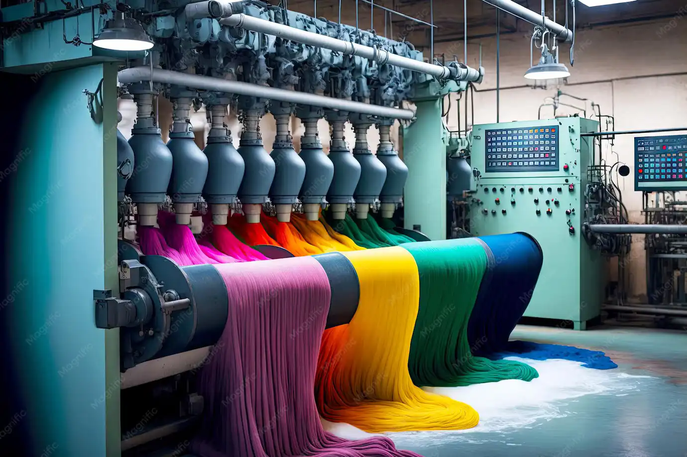
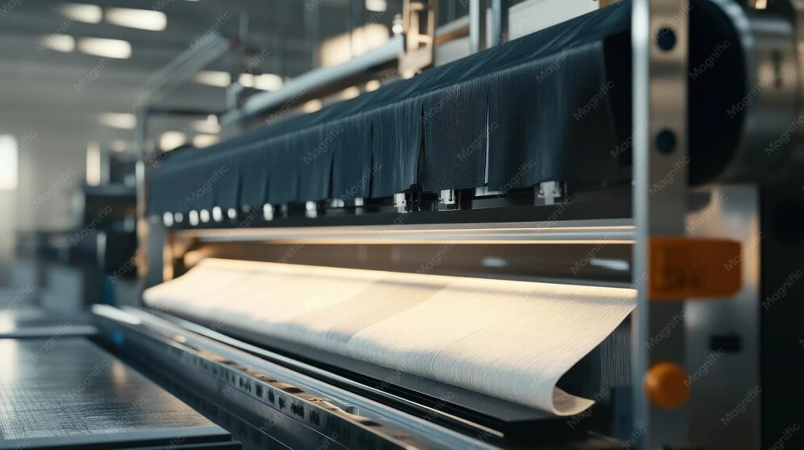
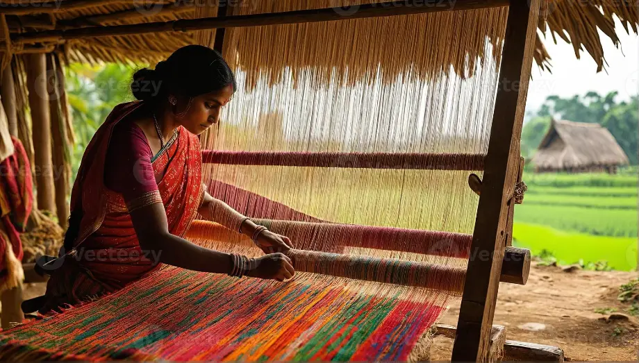
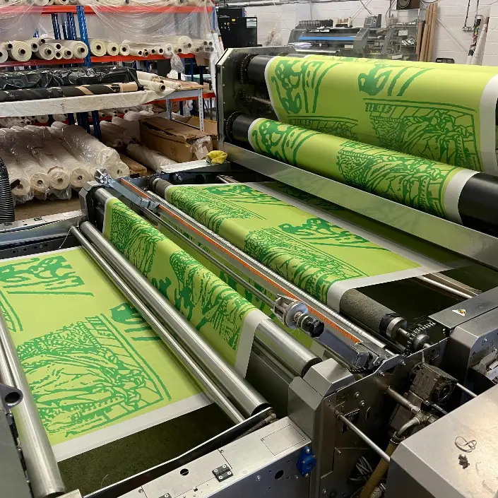
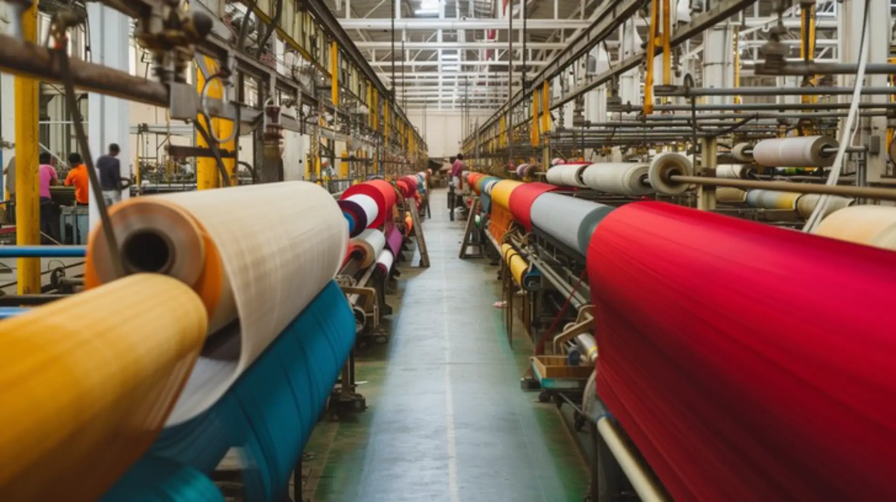
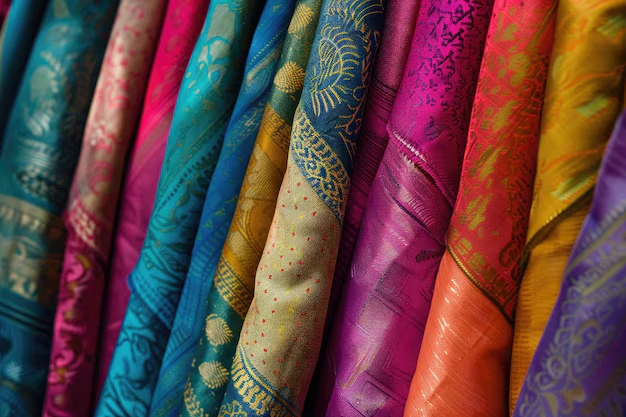

Air-Jet & Rapier Looms
High-speed shuttleless weaving with automatic electronic weft insertion.
We transform premium raw fibers into high-performance commercial textiles using AI-assisted quality control, precision spinning, Japanese Air-Jet weaving, computerized lab-dip dyeing, sustainable finishing, and OEM private label garment manufacturing.


Japanese Air-Jet Technology
120+ Japanese Air-Jet & Rapier looms weaving premium dobbies, twills, satins and heavy canvas.
Pantone shade matching using azo-free organic dyes with Zero Liquid Discharge water recycling.
Complete cut-to-pack garment manufacturing, embroidery, branding and private labeling.

Custom Yarn Counts
The foundation of uncompromising fabric durability begins in our spinning unit. Equipped with automated Japanese ring spinning frames and precision cone winding systems, we manufacture premium combed, compact, organic and recycled cotton yarns.
Electronic yarn clearers remove slubs and defects automatically.
Every production lot is tested for strength and quality.
Compact spinning ensures smooth and clean yarn surfaces.
Certified organic cotton and recycled yarn blends.
We combine Japanese Air-Jet and Rapier loom technology with precision textile engineering to manufacture premium woven fabrics with exceptional GSM consistency and world-class production efficiency.

Japanese Looms
High-speed shuttleless weaving with automatic electronic weft insertion.
Oxford, Twill, Satin, Herringbone, Yarn Dyed and Custom Structures.
63" to 120" export width fabric manufacturing.
High tensile strength engineered workwear fabrics.
Custom woven fabrics developed using advanced Japanese Air-Jet and Rapier weaving technology.
Read More →Complete private label manufacturing from cutting, stitching, embroidery and premium packaging.
Read More →Sustainable dyeing process using Zero Liquid Discharge technology and organic certified colors.
Read More →We manufacture premium cotton, linen, denim, canvas, satin and blended fabrics using sustainable technology and automated weaving systems.
Explore Collection
